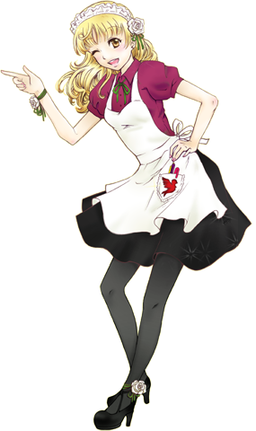

Welcome to the McGill Anime Club's Second Annual Maid & Butler Cafe!
Sunday, March 18, 2012
11h00 - 20h00
See who else is coming!
Invite your friends!

Come home to our Second Annual Maid Café! We have comfort, class and culture by the
plateful. Enter an opulent boudoir and let our costumed staff serve you with style.
Or, get a taste of home to-go with an à-la-carte item from our bake sale. See you in
elegance!
Venez participer à notre Deuxième Maid Café Annuel! Délectez-vous d'un moment
regorgeant de confort, de classe et de culture en notre compagnie. Découvrez un
endroit somptueux et laissez notre personnel costumé vous servir avec style. Ou
venez tout simplement déguster quelques gourmandises à notre vente de pâtisseries.
Au plaisir de vous voir tout en élégance!
Why the cafe
This is a 1 day special fundraiser event where you can experience what it's like
to be in a Maid Cafe! If you always wanted to go but don't want to pay a ticket
to Japan just for that, here's your chance. It's right at the heart of Montreal
in one of the best Manga Lounge around. Of course, everyone else is welcome to join
(the more the merrier!).
The crew and the volunteers from the Anime Club @ McGill will do their best at
serving you, and even make it as personalized as permitted. There is no reservation;
you can come in at anytime between 11am and 8pm.
So come and help us for the fundraising by buying the delicious food we have prepared
for you, and most importantly, to have a great experience that you'll never forget.
Where to go
O-TAKU manga lounge
3623 rue Saint Denis
Montréal, Qc, Canada
H2X 3L6
When to arrive
Sunday, March 18, 2012
11h00 - 20h00
First-come, first-served.
What to eat
Cookies
Crumbly confectionery, baked to perfection and sure to complement any tea
Oatmeal cookies
Traditional chewy cookies with soft oatmeal and juicy raisins.
Spiral cookies
Sweet cookies with both chocolate and vanilla sides; enjoy the best of both worlds!
No-bake Chocolate cookies
Peanut buttery, chocolatey, oatmeal-y bites that will tickle your taste buds.
Sugar cookies
Sweet cookies cut into cute shapes, perfect for dipping into tea or eating plain.
Peanut Butter cookies
Soft cookies with a satisfying edge to quell the peanut butter craving in us all.
Cakes and Baked Goods
Sit back, relax and enjoy a slice of something fluffy and delectable this afternoon
Nutella cake
A decadent dessert made with Nutella to satisfy chocolate and hazelnut cravings...at the same time!
Marble cake
A buttery chocolate-and-vanilla pound cake with a recipe handed down the generations.
Red Bean cake
The West meets the East in this dense, moist, red bean flavoured cake, complete with red bean icing.
Brownie
Pure chocolate-y delight for those who like to keep things simple.
Red Velvet Cupcakes with Mint Icing
The rich taste of red velvet cupcakes accentuated with the refreshing hint of minty sweetness.
Delicates
Light on the palate but abundant in taste, for those seeking a touch of something special
Cream Puff
Nothing says elegance quite like a light puff pastry filled with rich cream.
Nutella and Banana Crepe
A purely harmonious blend of nutella and banana inside a thin wrap.
Strawberry and Cream Crepe
Fresh strawberries give a gentle tang to this beautiful dessert.
Mcgill Anime Club Maid Café Special: Parfait of the Day
A layered dessert of mixed delights topped with your choice of green tea or red bean ice cream.
How to order
See something you’d like to take home to savour later, or gift someone to bring a
smile to their face? Ask your maid/butler about wrapping it up for you to go!
And don’t forget about the extra goods at the bake sale!